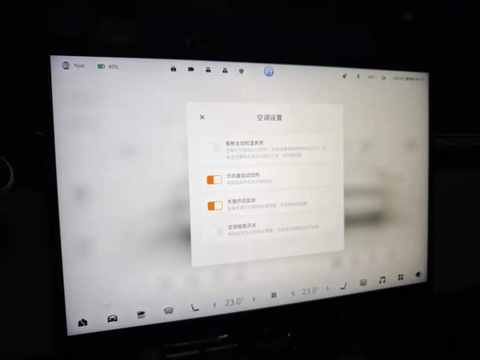
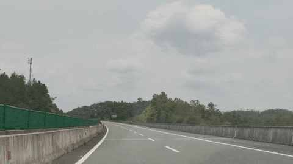
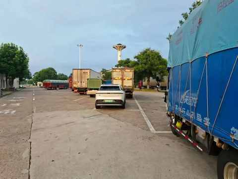
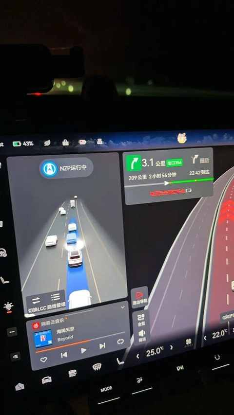
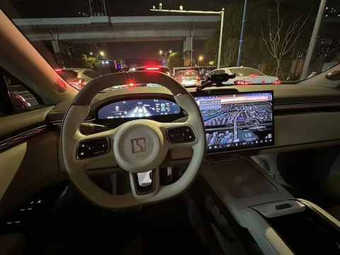
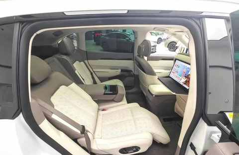

开极氪7X跑了3万公里，我才理解汽车的情绪价值
空间要够，续航要稳，补能不能太麻烦，长途不能掉链子，最好还能兼顾一点舒适和成本。 尤其是家里只有一台车的时候，这些东西比什么都重要。
所以很长一段时间里，我其实很少谈 “车的情绪价值”， 也经常看到有人分享，一辆车曾在哪个瞬间打动自己或家人。
在我过去的理解里，情绪价值这个词，多少有点虚。但极氪 7X 开到 3 万公里之后，我发现自己对这件事的理解变了。
提车时最打动我的，是续航、空间和配置，在开到3万公里后，真正留在记忆里的，却是一些当初几乎不会写进购车清单的小事。
方向盘加热：一个冬天的早晨，就记住了

方向盘加热，是我以前的车完没有的功能，甚至买第一辆车都不知道车还有这个功能配置。
后面看各种车评，知道这个功能之后甚至觉得这种配置有点多此一举，方向盘冷一点就冷一点，能有多重要？
直到某个冬天的早晨，我送娃上学。上车之后没过多久，握着方向盘的手心慢慢暖了起来，突然觉得：原来这样一个小细节能显著提升驾驶体验，那个时刻不仅手上是暖的，心也是暖暖的。
一次又惊又喜的变道：操控感也能提供情绪价值

有一天我和老婆一起送孩子上学，前车速度偏慢，我观察左侧车道安全后踩下加速踏板完成变道。整个过程比预想得更快，也更稳。
后排的老婆和孩子都下意识喊了一声，以为出现了危险的情况。
那一瞬间，他们的情绪其实很复杂。
先是惊，然后松了一口气，最后竟然生出一点这辆车“真厉害”的感觉。
有些情绪价值，来自一辆车在需要时依然能给你干净、利落的反馈，但它确实会改变你对一辆车的驾驶感受与信心。
第一次在服务区过夜：车不只是交通工具

纯电车跑长途，很多人最先想到的是续航焦虑。但跑得多了以后我发现，真正让人难忘的，往往不是还剩多少电，而是那些长途中以前不会经历的片段。
去年暑期，一次行程超过1500km的长途出行，行至半程到服务区时已经很晚，计划是在服务区过夜，第二天早上出发，充好电之后把车开到一个水池边的位置，停在一个货车的后，调整好座椅，打开驻车模式后便在车上睡下了。
虽然由于所需的被子和垫子准备不足，睡的也不沉，但明显知道后面再带上哪些东西就能大大提升在车里睡觉的体验。
你能意识到，这辆车不只是把你从 A 点送到 B 点的交通工具，它还有极强的空间属性，在某些时候能随时变成移动的空间。
辅助驾驶：让长途驾驶更轻松

辅助驾驶是一个用了便回不去的功能， 它替我承担的不是驾驶责任，而是高速上那些重复、机械、持续消耗注意力的部分。
以前会觉得，这类经历的意义主要是证明纯电车也能跑长途。
但真跑下来后才发现，真正留下来的不是我完成了多少公里的成就感，而是长时间相处之后，对一辆车逐渐建立起来的信任感。
而提到长途就绕不开辅助驾驶，之所以能单日开1000km，主要是辅助驾驶能让长途驾驶更轻松。
氛围灯：夜里开车时，才知道它的作用

这大概也是过去我会低估的东西。我以前总觉得，氛围灯这种配置在拍照时挺好看，真开起来未必有多大用。
但后来发现，傍晚或夜里开车时，车内那种柔和一点的光线，会让整个车厢的状态变得平静很多。它不会让车变得更快，也不会让续航更长，但它会让你更愿意待在这个空间里。
这就是我后来慢慢理解的情绪价值： 它有点像家里的小夜灯，不负责照明，却能让整个空间显得更安静、更温和。
后排沙发：我这辆车唯一的选装

我这辆极氪 7X 唯一的选装，就是后排沙发。不是因为它听起来高级，而是因为后排长期坐的是老婆和孩子。
腿托、靠背调节、加热、通风，这些东西放在试驾阶段看起来像“舒适配置”，但一旦进入长期家庭使用，它们就会变成一种很具体的情绪反馈：
你会觉得，这辆车没有只服务驾驶者一个人，而是真的在照顾一车人的体验。
3 万公里后，情绪价值不是虚的
对普通家庭来说，车首先当然还是工具，这一点没有变。
但当一辆车在 3 万公里之后，依然能让你在冬天握住方向盘时觉得暖和，在长途夜里让你觉得安心，在一次快速变道后让你松一口气，在家人坐上车时觉得这钱没白花，那它带来的，就不只是工具价值了。
它还会让你在某个时刻突然意识到：
原来所谓情绪价值，并不是虚的。
长期相处之后，一辆车所带来的情绪价值，往往来自普普通通通的时刻里。
相关文章
从比亚迪唐到极氪7X：9年新能源车主的23篇真实用车记录
人生第一台新能源车怎么选？开了9年新能源后，我建议先看这5个生活场景
极氪7X开了 3 万公里后，我在车上试了试AI电台
极氪7X车品消费复盘：2600元花出去后，哪些后悔，哪些离不开？
极氪7X开到3万公里，保养、充电、保险一共花了多少钱
从新鲜到习惯：16 个月开极氪7X跑3万公里后，我离不开的与早已忽略的
时薪不到30元，56单流水2627：一个中年人兼职开车送货的7个真相
100度纯电SUV第2次春运实录：去程充电1次，返程我学会了「下高速」